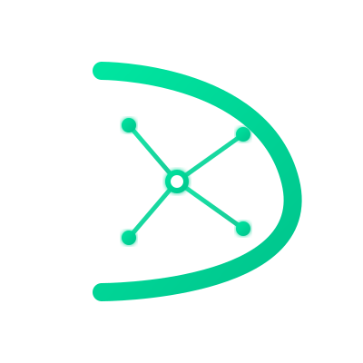

El primer sistema de inteligencia documental en tiempo real: documentos que se adaptan, envejecen con datos y conocen a sus lectores.
Las organizaciones generan miles de documentos que envejecen silenciosamente. El 73% de los empleados admite haber seguido procesos desactualizados por falta de alertas oportunas. El coste anual por empresa: entre 15.000 y 40.000 € en errores, tiempo perdido y riesgos de cumplimiento.
No se monitorean. Nadie sabe si están actualizados.
No se sabe qué partes confunden o se ignoran.
Los cambios en APIs o procesos no se propagan.
Una plataforma SaaS que transforma los documentos en organismos vivos, impulsados por flujos masivos de datos en tiempo real.
Predice cuándo un documento quedará desactualizado antes de que ocurra.
Mapea relaciones semánticas y propaga sugerencias de actualización.
Heatmaps, flujos y patrones de lectura a escala.
DocuStream tiene una ventana de 18–24 meses para liderar el nicho antes de que los grandes players puedan replicarlo.
Dashboard, documentos inteligentes, integraciones y grafo semántico.
Entrar en la demo